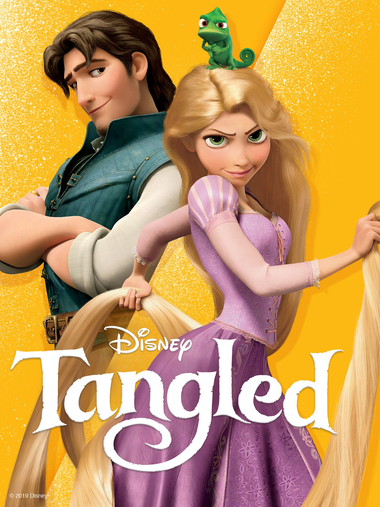

Tangled

อ้างอิง:https://www.amazon.com/Tangled-Mandy-Moore/dp/B004QKNXIQ
Tangled เป็นเรื่องราวของหัวขโมยหนุ่ม Flynn Rider ซึ่งไปขโมยของและหลบมาซ่อนตัวบนหอคอยของ Rapunzel สาวผมบลอนด์ยาวกว่า 70 ฟุต
เธอจึงจับเขาไว้เป็นตัวประกันบนหอคอยที่เธอถูกคุมขังเพื่อให้ช่วยเธอออกไปจากหอคอยแห่งนั้น จนเกิดเป็นเรื่องราวการผจญภัยที่แสนตื่นเต้นและลุ้นไปกับความรักของทั้งสองคนที่ค่อย ๆ ก่อตัวขึ้น
อ้างอิง:https://movie.kapook.com/tangled
อ้างอิง:https://www.youtube.com/watch?v=wCxuxrLNrsw&t=46s